Lección 1: La Elección del "Lienzo" (Configuración Inicial)
Importante: Canva tiene acceso a funciones adicionales y mejoradas que facilitan más la creacion de diseños, pero solo tendrás acceso a estas nuevas herramientas si pagas el Canva Pro. Puedes distinguir las funciones normales de las premium, ya que, estas últimas tienen un logo de una corona a su lado. En esta lección no se tomará en cuenta las herramientas premium.
Canva es una herramienta de diseño en línea. Crea una cuenta y elige una plantilla.
Canva necesita saber para qué es tu diseño para darte las medidas exactas. En la pantalla de inicio, haz clic en "Crear un diseño" (botón morado arriba a la izquierda). Busca el formato (por ejemplo: Post de Instagram, Presentación A4, folleto o Logo).
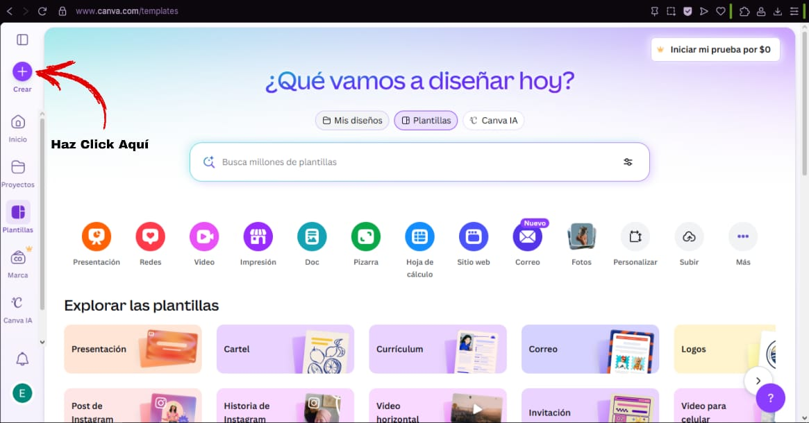
Al hacer clic se mostrará una pantalla donde te dará a elegir el tipo de trabajo que vayas a realizar:
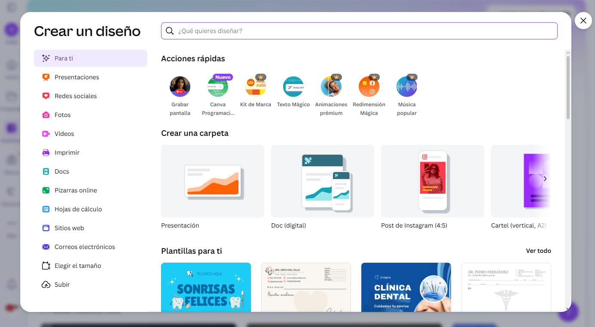
Para esta lección se utilizará un folleto (o tríptico) como ejemplo:
También puedes utilizar la barra de búsqueda para hallar más fácil el tipo de trabajo.
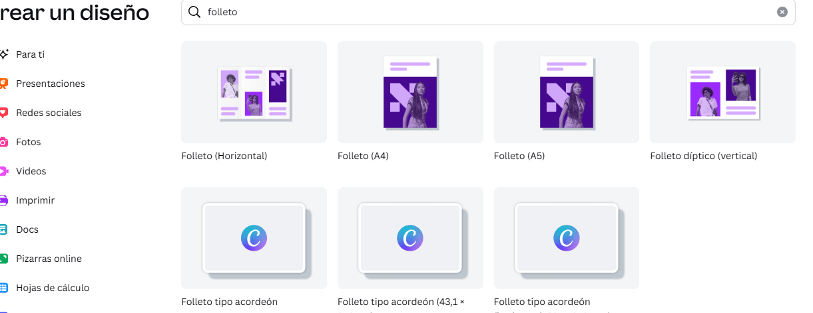
Si necesitas una medida exacta, usa "Elegir el tamaño " e ingresa los píxeles (px).
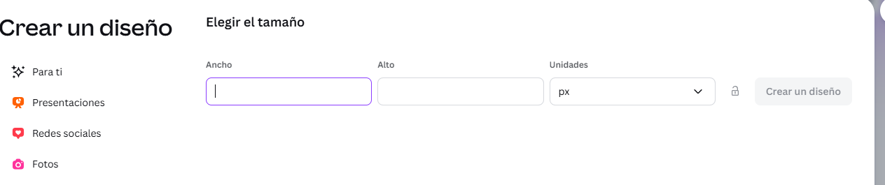
Lección 2: Dominando el Panel de Herramientas (La Barra Izquierda)
Este es tu inventario. Aprende las herramientas más importantes al crear un trabajo:
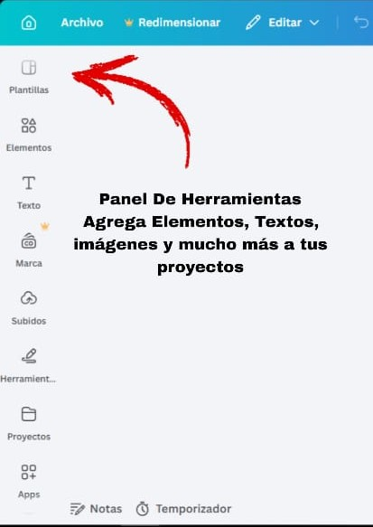
Plantillas: al crear un nuevo documento en blanco tienes la libertad de diseñar tu documento como prefieras, pero si quieres estilizar tu trabajo rápidamente,canva te ofrece una variedad de plantillas para que no tengas que preocuparte por el diseño. Puedes elegir la que consideres que le queda mejor a tu trabajo.
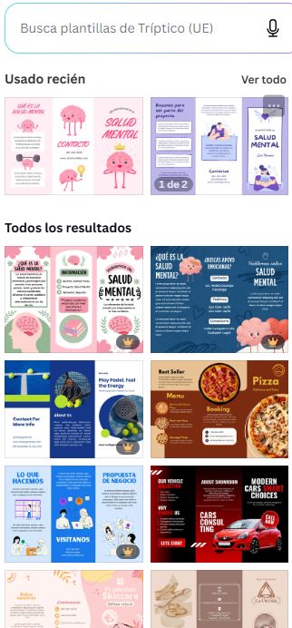
Elementos: puedes insertar formas, tanto en 2D (triángulos, cuadrados, círculos, etc) como 3D, fotos, videos, marcos, tablas, gráficos, entre otros
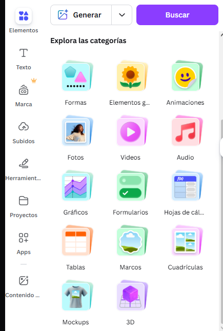
Texto: Para añadir cajas de texto, para así escribir tus títulos o párrafos.
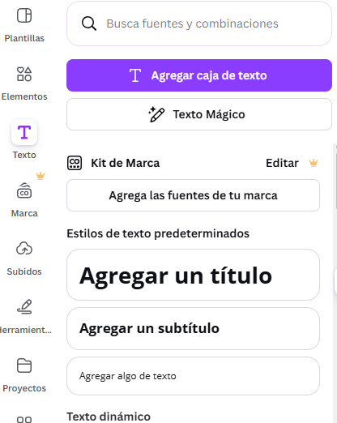
Puedes modificar el texto a tu consideracion o añadir unos estilos predetermindados que te ofrecen.
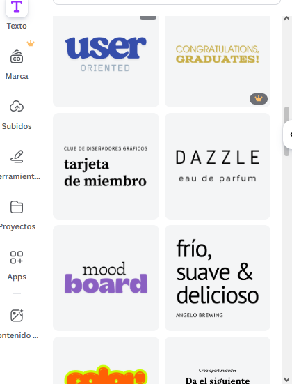
Herramientas:Esta parte funciona como un menú de acceso rápido en caso de que quieras realizar acciones simples (como dibujar lineas, añadir notas o resaltar un texto).
Proyectos: en esta parte puedes ver tus trabajos o diseños realizados.
Subidos: Aquí es donde subes tus propias fotos o imágenes desde tu computadora.
Lección 3: Edición de Objetos (La Barra Superior)
Cuando haces clic en un elemento que pusiste en el lienzo (un texto, una imagen), aparece una barra blanca arriba. Ahí es donde ocurre la magia:
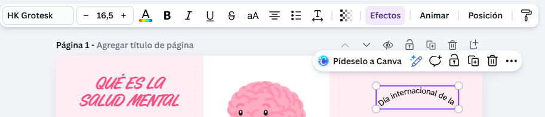
Puedes modificar el tamaño y el tipo de letra del texto en la parte izquierda de la barra.
La "A" con colores: Para cambiar el color de la letra.
B: para resaltar el color del texto (a esto se le conoce como negrita).
I: para hacer que el texto se incline ligeramente (a esto se le conoce como cursiva).
U: para subrayar por debajo del texto.
S: para tachar el texto, esto se refiere a trazar una línea por medio del texto.
aA: cambia tu texto a para que sea todo en mayúsculas.
Al lado de esas funciones se encuentran otras como alinear el texto, añadir viñetas y ajustar el espacio entre letras.
las siguientes funciones son herramientas visuales:
los pequeños cuadrados son para hacer el texto más claro o mas oscuroEfectos: aquí modificas tu texto para darle el diseño que consideres.
Animar: Para que los elementos seleccionados se muevan (ideal para videos).
Posición: Aquí es donde mandas un elemento hacia "atrás" de otra imagen o lo centras perfectamente.
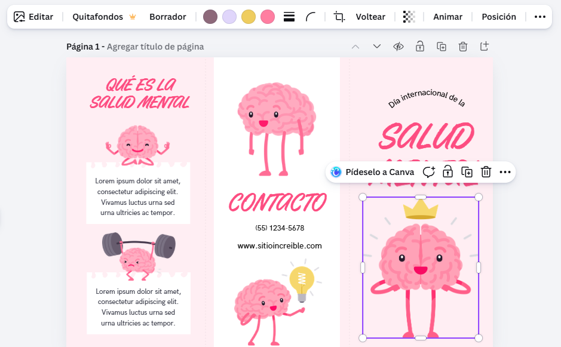
Editar: modifica el estilo artístico de la imgen seleccionada.
Borrador: borra detalles en las imagenes que no quieras que aparezcan en tu diseño.
Al sustituir los colores principales de la imagen verás que la imagen principal se adaptará a tus cambios realizados. También puedes añadirle un contorno a la imagen y redondear sus esquinas.
Recortar: al hacer clic te ofrecerá varias opciones para recortar tu imagen (por ejemplo 1:1, 16:9, 9:16, entre otros).
Voltear: te permite voltear en sentido vertical u horizontal (esto en caso de que quieras que tu imagen señale a una dirección en concreto).
Lección 4: Comportamiento de "Arrastrar y Soltar"
Canva es intuitivo, pero tiene sus trucos:
-Para mover: Haz clic en el objeto y arrastra.
-Para girar: utiliza las flechas circulares que se encuentran abajo de la imagen.
-Para agrandar: Usa las esquinas del objeto (así no se deforma).
-Para recortar: Usa los "tiradores" laterales (las rayitas blancas en los bordes de la imagen).
-Para duplicar rápido: Presiona Alt mientras arrastras un objeto o usa Ctrl + D.
-Bloquear: para hacer que un elemento se quede en ese sitio.
En la siguiente imagen puedes ver todas las demas opciones junto a sus atajos de teclado(puedes hacer clic derecho para verlas tu mismo en tu trabajo):
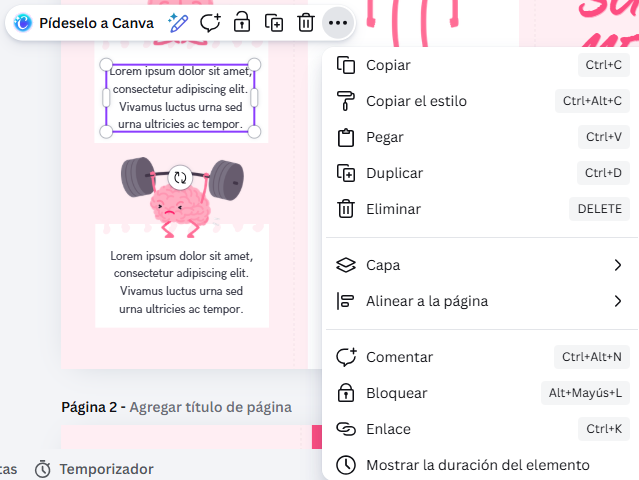
Lección 5: Exportación
Una vez que tu diseño esté listo, tienes que sacarlo de Canva: Haz clic en el botón "Compartir" (arriba a la derecha). Busca la opción "Descargar". Elige el formato:
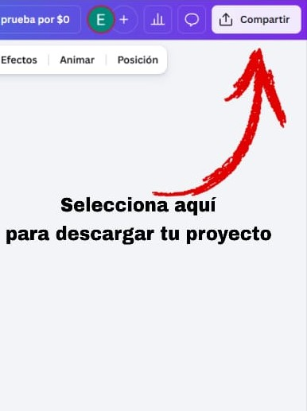